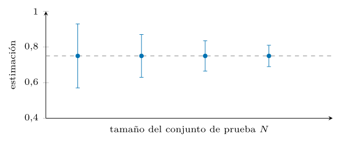
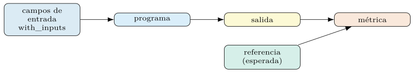
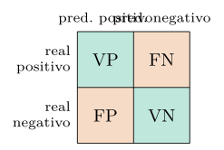
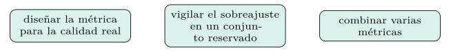
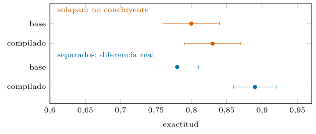
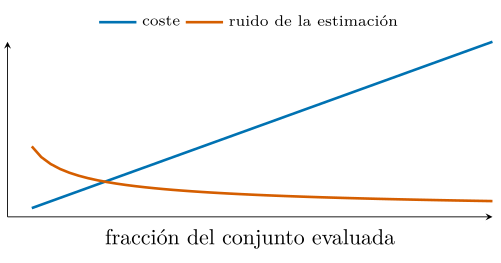
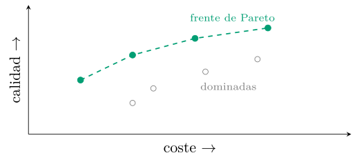
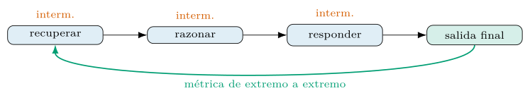
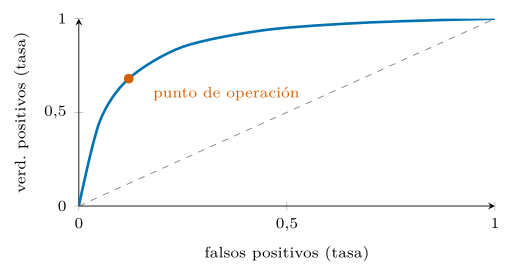
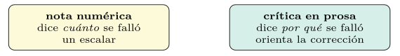

Capítulo 4. Evaluación rigurosa de programas DSPy
El capítulo 1 sostuvo que un programa que no se mide no se puede compilar, y el 3 aplazó a este la cuestión de cómo medir. Aquí se salda esa deuda. Evaluar un programa de LM no es ejecutar una métrica y anotar un número: es estimar, con honestidad estadística, una cantidad ruidosa sobre datos reservados, eligiendo una métrica que respete la estructura de la tarea. Sin ese rigor, la optimización de los capítulos 5 y 6 perseguiría una diana falsa.
El capítulo construye el aparato de evaluación de extremo a extremo: los conjuntos, la clase Example, la definición de métricas —de las booleanas a las que usan un LM como juez—, las medidas robustas al desequilibrio, la evaluación paralela con dspy.Evaluate, la consistencia frente a la exactitud y la ley de Goodhart. El hilo conductor es la honestidad: toda cifra se reporta como media con desviación, con su modelo y su fecha, nunca como un decimal suelto.
La evaluación como estimación y los conjuntos
Una métrica calculada sobre un conjunto de prueba no es la calidad del programa: es una estimación de ella. La cantidad de interés es el riesgo poblacional \(R(\pi)\) de la ecuación (1.8) —la métrica esperada sobre la distribución real de la tarea—, y de ella se observa la media empírica sobre una muestra finita. De ahí dos consecuencias que gobiernan todo el capítulo. La primera: la estimación tiene error de muestreo, que decrece con el tamaño del conjunto de prueba, de modo que una diferencia entre dos programas solo es real si supera ese ruido. La segunda: la estimación solo es insesgada si el conjunto de prueba no se usó para nada más —ni para ajustar, ni para elegir—; en cuanto se mira para decidir, deja de ser prueba y se convierte en validación.
Esta lectura convierte la evaluación en un problema de estadística, no de contabilidad. Medir bien es estimar bien, y estimar bien exige separar los datos, repetir las corridas y reportar la dispersión. El resto del capítulo desarrolla cada una de esas exigencias. La figura 4.1 dibuja la estimación y su error.
Cuánto conjunto hace falta.
La pregunta tiene respuesta aproximada antes de etiquetar un solo caso. Para una métrica de proporción —exactitud, tasa de acierto— sobre \(N\) ejemplos, el error típico de la estimación es \[\begin{equation} \mathrm{EE} \;=\; \sqrt{\frac{p\,(1-p)}{N}}, \end{equation}\] máximo en \(p=0{,}5\), donde vale \(0{,}5/\sqrt{N}\). La aritmética que se sigue es la que gobierna los presupuestos de etiquetado: con \(N=100\), el error típico ronda los cinco puntos porcentuales —solo se detectan con confianza diferencias enormes—; con \(N=400\) baja a dos puntos y medio; con \(N=1000\), a uno y medio. La regla rápida para comparar dos sistemas: para resolver una diferencia de \(\Delta\) puntos hacen falta, en orden de magnitud, \(N \sim 1/\Delta^2\) ejemplos —cuatro veces más conjunto por cada mitad de diferencia—. De ahí una consecuencia de diseño que sorprende a quien llega del ajuste fino: el conjunto de prueba merece ejemplos con más urgencia que el de entrenamiento, porque un programa de prompts aprende con decenas de demostraciones, pero distinguir al bueno del mediano exige cientos de casos de medida.
Dos fuentes de ruido, no una.
La dispersión de una cifra tiene dos orígenes que conviene separar porque se combaten con recursos distintos. El ruido de muestreo —qué ejemplos cayeron en la prueba— se reduce con más ejemplos, como manda la ecuación (4.1). El ruido de decodificación —la estocasticidad de la salida del modelo ante el mismo ejemplo (capítulo 2)— se reduce con más corridas, no con más ejemplos, y desaparece a temperatura cero al precio de medir solo el modo determinista del sistema. El diagnóstico es barato: repetir la evaluación completa con otra semilla de muestreo separa cuánta varianza viene de cada fuente, y la partida presupuestaria se asigna donde duele —más ejemplos si domina el muestreo, más corridas si domina la decodificación—. Confundirlas lleva a remedios inútiles: triplicar corridas no arregla una prueba de ochenta ejemplos, y agrandar la prueba no estabiliza un sistema que muestrea con temperatura alta. El desglose para el clasificador del libro queda: la desviación por decodificación es de puntos y la de muestreo, puntos (ambas pequeñas y de magnitud comparable en este banco).
Leer un intervalo sin místicas.
El intervalo se usa mejor cuando se lee sin solemnidad: es el rango de valores compatible con los datos al nivel de confianza elegido, y su anchura es información de primera clase —un sistema «del 82 %» con un intervalo de diez puntos es un sistema del que se sabe poco—. Dos hábitos de escritura se siguen. La resolución honesta: los decimales que se publican los autoriza el error típico de la ecuación (4.1), y escribir «81,37 %» con un error de dos puntos es vestir de precisión un redondeo; la cifra se da a la resolución que el intervalo sostiene. Y la comparación explícita: «A supera a B» se escribe solo cuando la pareada de la sección 4.6 lo avala; en el resto de los casos, el texto honesto es «no distinguibles con este conjunto», que no es un fracaso sino un resultado —a menudo el más barato de todos, porque autoriza a elegir por coste el empate de calidad—.
Validación cruzada, con mesura.
La validación cruzada clásica —\(k\) particiones, entrenar en \(k-1\) y validar en la restante, promediar— multiplica por \(k\) el número de llamadas, y con un LM eso es multiplicar la factura, así que aquí se usa con más mesura que en el aprendizaje clásico. Sus dos usos rentables: cuando el corpus es tan escaso que un solo reparto de validación deja demasiado ruido para elegir —la rotación exprime cada ejemplo—, y cuando se quiere estimar la sensibilidad del sistema al reparto mismo —una dispersión grande entre pliegues delata un corpus heterogéneo o una fuga—. La prueba final queda fuera de la rotación en todos los casos: la validación cruzada informa elecciones, y la cifra que se publica sigue saliendo de un conjunto sellado que ninguna rotación tocó.

Los conjuntos.
La práctica seria parte el corpus en cuatro papeles, no en dos. El conjunto de entrenamiento provee las demostraciones que el optimizador selecciona o arranca. El de validación guía esa selección: es el que el optimizador consulta para decidir qué configuración conserva. El de desarrollo —a veces fundido con la validación— sirve al humano para iterar el diseño sin tocar la prueba. Y el de prueba, sellado hasta el final, da la única cifra que se publica.
La separación obedece a una jerarquía de contaminación. Cada vez que un conjunto informa una decisión, su estimación se vuelve optimista para esa decisión; por eso el conjunto que mide el resultado final debe estar limpio de toda elección previa. La estratificación —preservar la proporción de clases en cada partición— y la vigilancia contra la fuga completan la higiene. Un reparto típico reserva la mayor parte para entrenamiento y porciones menores, pero suficientes para que el ruido de muestreo no domine, a validación y prueba. La figura 4.2 alinea los cuatro papeles.
El conjunto vivo.
«Sellado» no significa eterno. El mundo del que la prueba era muestra deriva —los ataques del capítulo 3 evolucionan, el lenguaje de los tickets cambia—, y una prueba envejecida mide un mundo que ya no existe. El mantenimiento tiene reglas simples. Nunca se edita en sitio: cada revisión produce una versión nueva del conjunto, con su identificador y su huella criptográfica, porque dos cifras solo son comparables si se midieron sobre la misma versión. La versión nueva conserva un núcleo de la vieja —el solapamiento permite empalmar las series históricas— y añade casos recientes muestreados con el mismo protocolo. Y la cadencia se ata a la deriva medida, no al calendario por sí solo: cuando el monitoreo de producción (capítulo 10) denota que la distribución se movió, la prueba se revisa. Un conjunto de evaluación es un instrumento de medida: se calibra, se versiona y se recambia, como cualquier otro.
La clase Example y la construcción de datos
DSPy representa cada caso con un dspy.Example, un contenedor de campos que distingue las entradas de las salidas esperadas. El método with_inputs marca qué campos son entrada; el resto se toma como referencia para la métrica.
import dspy
ejemplos = [
dspy.Example(mensaje=m, equipo=y).with_inputs("mensaje")
for m, y in zip(mensajes, etiquetas)
]
entreno, desarrollo, prueba = particionar(ejemplos) # estratificado, sin fugaLa distinción importa porque el programa recibe solo los campos de entrada y debe producir los de salida, que la métrica compara con la referencia. Un Example bien construido es la unidad atómica de la evaluación y de la optimización: ambas iteran sobre listas de Example. La figura 4.3 dibuja esa unidad.

dspy.Example distingue las entradas —marcadas con with_inputs— de las salidas esperadas. El programa recibe solo las entradas; la métrica compara su salida con la referencia. Es la unidad atómica de la evaluación y de la optimización.Datos reales, sintéticos y aumentados.
No siempre hay datos etiquetados suficientes, y entonces surgen tres clases de dato que conviene no mezclar. El dato real es el patrón de oro: caro de etiquetar, pero el único que mide la tarea verdadera. El dato sintético declarado se genera con reglas o con un LM para cubrir huecos o controlar un fenómeno pedagógico; es legítimo siempre que se marque como tal y no se haga pasar por real. El dato aumentado parte de ejemplos reales y los varía — parafraseando, traduciendo— para ampliar el conjunto.
# aumentar con un LM: variar un ejemplo real, marcando el origen sintetico
parafrasear = dspy.Predict("texto -> variante")
sinteticos = [
dspy.Example(mensaje=parafrasear(texto=e.mensaje).variante,
equipo=e.equipo, origen="sintetico").with_inputs("mensaje")
for e in entreno
]El riesgo del dato sintético es el desplazamiento de distribución: un LM genera texto más limpio y uniforme que el mundo real, y un sistema afinado sobre él puede fallar en producción. Por eso la métrica que decide se mide siempre sobre dato real reservado, y el sintético se confina al entrenamiento, marcado y auditable. La tabla 4.1 opone las tres clases.
Cuidado con el juez que etiquetó.
Hay una variante del problema tan común como inadvertida: etiquetas «reales» que en origen produjo otro LM —un corpus etiquetado con un modelo grande para ahorrar expertos, una referencia generada y revisada por encima—. Evaluar un sistema de LM contra referencias escritas por un LM introduce un sesgo de familia: se premia al sistema que se parece al etiquetador, no al que acierta, y la cifra mejora por afinidad estilística. Si el etiquetado asistido es inevitable —a menudo lo es—, la higiene mínima tiene tres piezas: declarar la procedencia de cada etiqueta en el propio ejemplo —el campo origen del listado anterior—, verificar con humanos una submuestra y reportar el acuerdo, y garantizar que el modelo que etiquetó no es el que se evalúa ni su pariente cercano. La regla de fondo del libro no cambia: la cifra que decide se apoya en juicio humano en algún punto de su cadena de custodia, y ese punto se documenta.
La procedencia viaja con el ejemplo.
Los campos extra de un Example —origen, fecha, fuente, versión del esquema— no molestan al programa, que solo consume las entradas marcadas, y valen su peso en auditorías: permiten rebanar resultados por procedencia (¿falla más en lo sintético o en lo real?), reconstruir cómo se compuso un conjunto meses después y aplicar las políticas de datos del capítulo 9 —qué ejemplos contienen datos personales y con qué base—. La costumbre barata que evita arqueologías caras: todo ejemplo nace con su ficha, y la ficha viaja con él por particiones, versiones y repositorios.
| Clase | Origen | Riesgo |
|---|---|---|
| Real | etiquetado a mano | caro, pero mide la tarea |
| Sintético declarado | reglas o un LM | desplazamiento de distribución |
| Aumentado | varía ejemplos reales | hereda el sesgo del original |
Definición de métricas: de la exactitud a F1 y MCC
En DSPy una métrica es una función que recibe el ejemplo y la predicción y devuelve un número —o un booleano—. Las hay de tres clases. La booleana comprueba una coincidencia exacta: útil para etiquetas cerradas. La numérica computa un solapamiento gradual —F1 de tokens, distancia— cuando la salida no es una etiqueta sino texto. Y la semántica delega el juicio en otro LM, el LM como juez, cuando la corrección depende del significado y no de la forma.
def exactitud(ejemplo, pred, traza=None):
return ejemplo.equipo == pred.equipo # metrica booleana
class Juez(dspy.Signature):
"""decide si la respuesta cubre la referencia en sentido."""
referencia: str = dspy.InputField()
respuesta: str = dspy.InputField()
correcta: bool = dspy.OutputField()
juez = dspy.Predict(Juez)
def metrica_semantica(ejemplo, pred, traza=None):
return juez(referencia=ejemplo.respuesta, respuesta=pred.respuesta).correctaEl juez basado en LM es potente y traicionero: hereda los sesgos del modelo que lo implementa y puede premiar la verbosidad o el estilo. Por eso se calibra contra juicios humanos en una muestra antes de confiar en él, y se reporta como una métrica más, con su incertidumbre.
La métrica es código, y el código se prueba.
Un error en la métrica es el peor error del sistema, porque corrompe todas las cifras y, peor, la diana del optimizador: Goodhart por accidente. Y las métricas concentran casos borde que invitan al error: ¿qué devuelve la booleana si la predicción llegó vacía?, ¿cómo trata la numérica una salida malformada que el adaptador no pudo reparar?, ¿qué pasa con la división por cero de la precisión cuando no hubo positivos predichos —ecuación (4.2)—? La respuesta profesional es la de cualquier código: pruebas unitarias de la métrica con una batería de casos límite —acierto pleno, fallo pleno, salida vacía, salida malformada, empate—, sus propiedades declaradas y comprobadas —el rango, la simetría si la hay, el valor en los degenerados—, y control de versiones: cambiar la métrica invalida la comparabilidad de las cifras anteriores, exactamente como cambiar la firma (capítulo 2), y se anota en la ficha de cada resultado.
Normalizar antes de comparar.
La coincidencia exacta esconde una decisión: ¿exacta respecto a qué? Entre la referencia «Crítico» y la predicción «critico» median una mayúscula y una tilde, y castigarlas como errores mide la ortografía del modelo, no su juicio. Toda métrica de comparación declara su normalización —minúsculas, tildes, espacios, puntuación final— y la aplica por igual a referencia y predicción; en español, la tilde perdida es el caso estrella, porque los modelos la omiten con frecuencia y ningún clasificador debería suspender por ella. El límite también se declara: normalizar sinónimos ya no es normalización sino juicio semántico, y ese salto se da con la métrica semántica de la tabla 4.2, no con una lista de equivalencias escondida en la función. La normalización elegida queda escrita junto a la métrica, porque cambia la cifra y, por tanto, es parte de su definición.
Métricas para estructuras.
Cuando la salida es un conjunto o un objeto, la pregunta «¿acertó?» se descompone. Para conjuntos —las etiquetas múltiples del capítulo 3, las entidades extraídas del capítulo 9—, las medidas naturales premian el solapamiento: la \(F_1\) por muestra entre el conjunto predicho y el real, o la proporción de elementos en desacuerdo, en vez del todo-o-nada del conjunto exacto, que castiga igual olvidar una etiqueta que inventarse cinco. Para objetos con campos, la medida se hace campo a campo —exactitud por campo, con la coincidencia definida según su tipo: exacta en el identificador, normalizada en el texto, con tolerancia en el número— y se agrega con pesos declarados, porque errar el CVE no pesa como errar la descripción. Y una tasa merece columna propia: la de validez estructural —cuántas salidas respetaron el esquema a la primera—, que mide al adaptador tanto como al modelo y anticipa el coste de reintentos en producción (capítulo 2). Las tres capas —estructura válida, campos correctos, conjunto completo— se reportan por separado: cada una falla por causas distintas y se arregla con palancas distintas.
Referencias múltiples y empates.
No toda tarea tiene una única respuesta correcta, y forzar una referencia única convierte en «error» a la variante legítima. Los remedios son dos, por orden de coste. Referencias múltiples: el ejemplo lista las respuestas aceptables y la métrica puntúa contra la más favorable —el máximo sobre las referencias—, con la disciplina de que la lista la mantenga el criterio experto, no la acumulación de salidas bonitas del propio sistema, porque esa acumulación es Goodhart entrando por la puerta de los datos. Y para el caso continuo —resúmenes, explicaciones, donde el espacio de aciertos no se enumera—, el juez semántico de la sección 4.7 con una rúbrica que defina la equivalencia. El síntoma de que la tarea necesita este trato se detecta en el propio corpus: si los anotadores de la sección 4.2 disienten dando respuestas distintas y todas defendibles, la referencia única era una ficción desde el principio.
| Clase | Qué compara | Cuándo |
|---|---|---|
| Booleana | coincidencia exacta | etiquetas cerradas |
| Numérica | solapamiento gradual | texto, distancias |
| Semántica | el juicio de un LM | corrección de significado |
Precisión, exhaustividad y F1.
La exactitud engaña en un corpus desequilibrado, como advirtió el capítulo 3. Las medidas por clase lo corrigen. Para una clase, con verdaderos positivos \(\mathit{VP}\), falsos positivos \(\mathit{FP}\) y falsos negativos \(\mathit{FN}\), la precisión y la exhaustividad son \[\begin{equation} P = \frac{\mathit{VP}}{\mathit{VP}+\mathit{FP}}, \qquad R = \frac{\mathit{VP}}{\mathit{VP}+\mathit{FN}}, \end{equation}\] y su media armónica es la \(F_1\), \[\begin{equation} F_1 = \frac{2\,P\,R}{P+R}. \end{equation}\] En un problema multiclase, el F1 macro promedia la \(F_1\) de cada clase por igual, de modo que una clase rara pesa tanto como una frecuente —justo lo que un SOC necesita, donde el ataque infrecuente es el que importa—. El F1 micro, en cambio, agrega antes de promediar y favorece a las clases mayoritarias. La elección entre macro y micro es una decisión de diseño con consecuencias. La figura 4.4 fija el convenio de la matriz y la tabla 4.3, el criterio entre macro y micro.

Más allá del acierto.
Dos coeficientes corrigen un defecto que la \(F_1\) no captura: el acierto por azar. La Kappa de Cohen descuenta la concordancia esperada al azar (Cohen 1960), \[\begin{equation}
\kappa = \frac{p_o - p_e}{1 - p_e},
\end{equation}\] donde \(p_o\) es la proporción observada de aciertos y \(p_e\) la esperada si las predicciones fueran aleatorias con las mismas frecuencias marginales. El coeficiente de correlación de Matthews (MCC) resume la matriz de confusión binaria en un único valor en \([-1,1]\), \[\begin{equation}
\mathrm{MCC} =
\frac{\mathit{VP}\cdot\mathit{VN} - \mathit{FP}\cdot\mathit{FN}}
{\sqrt{(\mathit{VP}{+}\mathit{FP})(\mathit{VP}{+}\mathit{FN})
(\mathit{VN}{+}\mathit{FP})(\mathit{VN}{+}\mathit{FN})}},
\end{equation}\] y es especialmente honesto bajo desequilibrio, porque solo es alto cuando el clasificador acierta en las cuatro casillas (Matthews 1975). Ambos se calculan con scikit-learn a partir de las predicciones, y conviene reportarlos junto a la \(F_1\) para que ninguna métrica oculte un fallo que otra revela.
| Promedia | Favorece | |
|---|---|---|
| F1 macro | cada clase por igual | la clase rara (un SOC) |
| F1 micro | agrega antes de promediar | la clase mayoritaria |
dspy.Evaluate y la consistencia
Evaluar a mano —un bucle que recorre la prueba, llama al programa y acumula la métrica— funciona pero es lento, porque cada llamada espera a la red. dspy.Evaluate hace lo mismo en paralelo: como cada ejemplo es independiente, lanza muchas llamadas a la vez y agrega el resultado.
evaluar = dspy.Evaluate(devset=prueba, metric=exactitud,
num_threads=16, display_progress=True)
puntuacion = evaluar(programa) # exactitud media sobre la pruebaEl paralelismo recorta el reloj, pero topa con los límites de tasa del proveedor: demasiados hilos provocan rechazos. El conteo de tokens del historial (capítulo 2) permite estimar de antemano el coste de una evaluación completa, y fijar un número de hilos prudente es parte del diseño.
Guardar las predicciones, no solo la nota.
La salida de una evaluación no es un número: es la lista completa de predicciones, y conviene persistirla. El motivo es económico y metodológico a la vez. Con las predicciones en disco —entrada, salida del programa, referencia, veredicto de la métrica, ejemplo a ejemplo—, cualquier análisis posterior es gratuito: recalcular otra métrica sobre la misma corrida, rebanar por clase o por procedencia (sección 4.2), inspeccionar los fallos uno a uno, alimentar la comparación pareada de la sección 4.6. Sin ellas, cada pregunta nueva repaga la evaluación entera. La disciplina complementaria es fijar cuanto haga la corrida repetible —el orden de los ejemplos, la semilla del muestreo si lo hay— y registrar la corrida con su ficha (capítulo 2). La evaluación cara se hace una vez; se interroga muchas.
Un solo arnés para todos los contextos.
La métrica vive en tres sitios a la vez —el bucle del optimizador, la prueba de humo de la integración continua, la campaña de medidas— y la tentación de reimplementarla «rápido» en cada uno acaba en tres varas de medir que disienten en los bordes: una normalización distinta aquí, un tratamiento del caso vacío distinto allá, y cifras que no cuadran sin que nadie mienta. La regla de ingeniería: el arnés de evaluación es uno —la misma función de métrica, la misma configuración de Evaluate, el mismo tratamiento de errores—, versionado en un módulo común que optimizador, pruebas y campañas importan; los contextos difieren solo en datos y presupuesto, nunca en la vara. Es la misma disciplina del registro único de cifras que este libro se aplica a sí mismo: un número, una fuente, por construcción.
La consistencia, ejemplo a ejemplo.
El agregado de consistencia esconde su información más útil: dónde es inconsistente el sistema. La tasa de cambio por ejemplo —cuántas de las \(k\) repeticiones disienten de la mayoría— dibuja un mapa: los ejemplos donde el sistema responde siempre igual son su zona firme; aquellos donde vacila son su frontera de decisión empírica. Ese mapa tiene tres usos inmediatos. Los casos vacilantes son los mejores candidatos al etiquetado experto del aprendizaje activo (capítulo 3): ahí la señal humana rinde más. Son también la población natural para la abstención: la inconsistencia empírica es una medida de incertidumbre que no depende de la calibración declarada. Y su evolución vigila el sistema: una frontera que se ensancha tras un cambio de modelo denota inestabilidad nueva aunque la exactitud media no se haya movido. La fracción de ejemplos vacilantes del clasificador queda: % de los ejemplos vacilan entre cinco muestras.
Consistencia frente a exactitud.
La exactitud mide si el programa acierta; la consistencia mide si responde lo mismo al repetir. Son ortogonales: un sistema puede ser consistente y erróneo, o acertado pero inestable. Para medir la consistencia se repite cada ejemplo \(k\) veces con la caché desactivada y se computa la proporción de la respuesta mayoritaria; un sistema con temperatura cero será casi perfectamente consistente, uno con muestreo lo será menos. La figura 4.5 cruza los dos ejes y la tabla 4.4 resume cómo se mide cada uno.
| Qué mide | Cómo | |
|---|---|---|
| Exactitud | si acierta | contra la referencia |
| Consistencia | si repite la respuesta | \(k\) corridas sin caché |
Esta distinción enlaza con la naturaleza estocástica del capítulo 2: como la salida es una variable aleatoria, una sola corrida no caracteriza al sistema. De ahí la norma que el libro no transgrede: toda cifra de calidad se mide sobre \(N\ge 3\) corridas y se reporta como media con desviación. La exactitud de un clasificador no es «\(87,3\) %», es «\(\resCCuatroAccMediaMedia \pm \resCCuatroAccMediaDesv\) % sobre \(N\) corridas»; el código del capítulo produce ambos valores.
La ley de Goodhart y los límites de tasa
«Cuando una medida se convierte en objetivo, deja de ser una buena medida.» La ley de Goodhart es la amenaza central de la optimización automática: un optimizador potente explotará cualquier grieta de la métrica con la misma diligencia con que busca aciertos. Una métrica de coincidencia exacta castiga una respuesta correcta mal formateada, y el optimizador aprenderá a formatear antes que a acertar; una métrica laxa premia respuestas vacuas; un juez basado en LM premia el estilo que ese LM prefiere. La tabla 4.5 recoge esas grietas.
| Métrica | El optimizador explota |
|---|---|
| Coincidencia exacta | formatea antes que acierta |
| Métrica laxa | produce respuestas vacuas |
| Juez por LM | imita el estilo preferido |
La defensa es triple. Primero, diseñar la métrica para que capture la calidad real y no un sustituto cómodo. Segundo, vigilar el sobreajuste contra un conjunto reservado, donde una mejora artificial no se sostiene. Tercero, combinar varias métricas, porque una grieta rara vez engaña a todas a la vez. La elección de la métrica no es un paso previo trivial: es la decisión que condiciona todo lo demás, y por eso ocupa un capítulo entero. La figura 4.6 ordena la triple defensa.
Goodhart en vivo: los síntomas.
La explotación de la métrica deja huellas reconocibles durante la propia optimización, y vigilarlas convierte la ley de Goodhart de fatalidad en diagnóstico. El síntoma cardinal es la divergencia de curvas: la métrica sube en la validación que guía la búsqueda y baja —o no se mueve— en un conjunto de control que el optimizador no ve; esa tijera denota que se está aprendiendo la grieta, no la tarea. El segundo vive en el artefacto: instrucciones compiladas que codifican trucos en vez de criterio —«responde siempre en una palabra», «cuando dudes, elige la clase X»— o demostraciones degeneradas que explotan un patrón del conjunto. Por eso el artefacto se lee tras cada compilación (capítulo 2): el texto del prompt es la explicación de la cifra, y una mejora cuya explicación leída da vergüenza no se promueve. El tercero es la fragilidad ante perturbación: la mejora que desaparece al parafrasear las entradas o al permutar las clases era formato, no juicio. Las tres señales se inspeccionan como rutina de cada corrida, no como autopsia del desastre.

Límites de tasa y excepciones.
Una evaluación sobre miles de llamadas tropieza con errores transitorios: límites de tasa, tiempos de espera, cortes de red. Una evaluación robusta los absorbe con reintentos de espera creciente y no se detiene ante un fallo aislado, sino que lo registra y continúa, para que una incidencia de red no invalide horas de cómputo. Las validaciones se hacen con raise, nunca con assert.
DSPy absorbe parte de esta fricción, pero el diseño decide el resto: una métrica que lanza una excepción ante una salida malformada debe decidir si ese caso cuenta como fallo —lo habitual— o se descarta, y esa decisión se documenta, porque cambia la cifra.
Significancia estadística de una diferencia
Si la evaluación es una estimación con ruido (sección 4.1), una diferencia entre dos programas solo cuenta cuando supera ese ruido. Afirmar «el optimizado mejora dos puntos» sin más es arriesgado: esos dos puntos pueden ser fluctuación de muestreo. La herramienta honesta es el intervalo de confianza por bootstrap: se remuestrea el conjunto de prueba con reemplazo muchas veces, se recalcula la métrica en cada remuestreo y se mira la dispersión.
import numpy as np
def ic_bootstrap(aciertos, n=1000, semilla=0):
"""intervalo de confianza al 95% de la exactitud por bootstrap."""
rng = np.random.default_rng(semilla) # se fija para reproducir
medias = [np.mean(rng.choice(aciertos, len(aciertos), replace=True))
for _ in range(n)]
return np.percentile(medias, [2.5, 97.5])Si los intervalos de dos programas se solapan, la diferencia no es concluyente y declarar un ganador sería engañoso. Una comparación pareada —evaluar ambos sobre los mismos ejemplos y mirar la diferencia caso a caso— gana potencia, porque elimina la varianza del conjunto. La regla del libro: ninguna mejora se anuncia sin comprobar que sobrevive al ruido. El remuestreo con reemplazo como estimador general de la incertidumbre viene de la estadística clásica (Efron 1979), y su virtud aquí es la indiferencia al tipo de métrica: vale igual para una exactitud, un F1 macro o un juez por LM. La figura 4.7 muestra los dos desenlaces: intervalos que se solapan y que no.
La comparación pareada, en concreto.
Con las predicciones de ambos programas sobre los mismos ejemplos (sección 4.4), la pareada tiene dos formas prácticas. La general: aplicar el bootstrap a la diferencia por ejemplo —remuestrear pares, no conjuntos— y mirar si el intervalo de la diferencia contiene al cero. Y la clásica para clasificadores, la prueba de McNemar, que solo mira los ejemplos donde los dos programas disienten: si A acierta donde B falla en \(b\) casos y B acierta donde A falla en \(c\), bajo la hipótesis de igualdad ambos conteos deberían equilibrarse, y un desequilibrio grande entre \(b\) y \(c\) denota diferencia real; es la prueba recomendada de antiguo para comparar clasificadores sobre un mismo conjunto (Dietterich 1998).
def diferencia_pareada(aciertos_a, aciertos_b, n=1000, semilla=0):
"""IC al 95% de la diferencia A-B por bootstrap pareado."""
rng = np.random.default_rng(semilla) # se fija para reproducir
pares = np.array(aciertos_a) - np.array(aciertos_b)
medias = [np.mean(rng.choice(pares, len(pares), replace=True))
for _ in range(n)]
return np.percentile(medias, [2.5, 97.5]) # ¿contiene al cero?La pareada es más potente que comparar dos intervalos independientes porque descuenta la dificultad compartida: los ejemplos fáciles para ambos y los imposibles para ambos no aportan varianza a la diferencia. Con ella, mejoras de uno o dos puntos —invisibles para intervalos marginales que se solapan— se resuelven con el mismo conjunto de prueba.
Muchas comparaciones, una trampa.
La significancia se degrada con el uso. Quien prueba veinte configuraciones y reporta la mejor ha hecho veinte comparaciones, y al nivel de confianza habitual una de cada veinte «gana» por puro azar: el ganador de un torneo grande llega con ventaja inflada de serie. Las correcciones formales —repartir el nivel de significancia entre las comparaciones— existen y son conservadoras; la corrección estructural es mejor y ya está en la arquitectura de conjuntos: la búsqueda elige sobre la validación, y el ganador único se confirma una sola vez sobre la prueba sellada; así la cifra publicada nunca es la del torneo sino la de una comparación limpia. El corolario para el diario de experimentos: se anotan también los intentos perdedores, porque «probamos treinta y esta fue la mejor» es información que el lector de la cifra necesita para descontarla.
Fijar antes de mirar.
La versión doméstica del prerregistro científico cabe en un párrafo y evita la mitad de los autoengaños del capítulo: antes de lanzar la campaña de medidas se escribe —en el diario, con fecha— la métrica y su normalización, el conjunto y su versión, el número de corridas, el criterio de éxito y las comparaciones que se harán. Todo cuanto se decida después de ver resultados queda automáticamente en la categoría de exploración: legítima, fértil, y no publicable como confirmación hasta repetirse bajo un plan fijado de nuevo. La frontera entre explorar y confirmar no es burocracia académica: es la única defensa conocida contra el sesgo del que mira —quien elige la métrica viendo las cifras encontrará una que le dé la razón—, y con sistemas estocásticos, caros y con docenas de mandos, las ocasiones de mirar antes de fijar se multiplican. El piloto explora; la campaña confirma; y cada cifra del libro declara a cuál de los dos regímenes pertenece.

El LM como juez y las métricas de generación
Cuando la corrección es semántica, un LM juzga la salida (sección 4.3), pero hacerlo bien exige cuidado. Un juez por LM arrastra sesgos conocidos: prefiere respuestas largas, favorece al primer candidato en una comparación, y premia el estilo del modelo que lo implementa —incluso el suyo propio—. Sin control, el juez mide su gusto, no la calidad.
Tres prácticas lo disciplinan. Una rúbrica explícita —criterios concretos, no «¿es buena?»— acota el juicio. La comparación pareada con orden aleatorizado neutraliza el sesgo de posición. Y la calibración contra humanos sobre una muestra mide cuánto coincide el juez con el experto antes de confiar en él a escala. El juez por LM escala donde el humano no llega, pero se valida como cualquier instrumento: contra un patrón, con su margen de error declarado. La tabla 4.6 empareja cada sesgo con su antídoto.
El acuerdo juez-humano, con número.
«Se calibra contra humanos» tiene forma concreta: una muestra de salidas —doscientas bastan para empezar— juzgada en paralelo por el LM y por expertos, y el acuerdo cuantificado con el mismo \(\kappa\) de la ecuación (4.4), que descuenta el acuerdo casual —decisivo cuando los veredictos están desequilibrados, como suelen: la mayoría de las salidas son correctas y coincidir en «bien» no acredita nada—. El desglose importa tanto como el total: un juez puede concordar en los casos claros y disentir sistemáticamente en una franja —las respuestas parcialmente correctas, las demasiado largas—, y esa franja delimita dónde el juez es fiable y dónde sus veredictos piden revisión humana. El umbral de acuerdo aceptable se fija antes de mirar —un \(\kappa\) mediocre obliga a rehacer la rúbrica, no a rebajar la exigencia—. Sobre CSIC, donde la referencia es la etiqueta del corpus, un juez LM independiente y sin demostraciones concuerda solo de forma discreta con ella (\(\kappa = \resCCuatroJuezKappa\)): un recordatorio de que el juez es un modelo más, que se valida y a menudo se optimiza antes de fiarse de sus veredictos.
El humano también se mide.
En la calibración del juez se cuela una cifra que merece vida propia: el rendimiento humano en la tarea. Medirlo —con el mismo conjunto, la misma métrica y el mismo rigor que a los sistemas— fija la referencia que da sentido a todas las demás: un clasificador «del 88 %» significa cosas opuestas si los analistas rinden 95 o rinden 85, y el techo práctico de toda mejora es el acuerdo entre expertos de la sección 4.2, no el cien por cien de un mundo sin ambigüedad. La medida humana exige sus propios cuidados —tiempo realista por caso, sin consultar al vecino, con la fatiga del volumen real y no la frescura de veinte ejemplos—, y suele deparar dos sorpresas: es más baja de cuanto el equipo cree, y varía entre personas más de cuanto varía entre versiones del sistema. Ambas sorpresas recolocan la conversación sobre automatizar (capítulo 3) en su sitio: la máquina no compite contra la perfección, compite contra la alternativa. La referencia humana no se mide en el banco de este capítulo —exige analistas anotando el mismo corpus en condiciones realistas—; es la cifra que cada equipo produce sobre sus datos para saber contra qué techo compara su clasificador.
El juez se congela.
El juez es parte del instrumento de medida, y un instrumento que cambia a mitad del experimento invalida la serie. De ahí tres reglas de gestión. Congelación: el juez —modelo, versión, rúbrica, plantilla— se fija por escrito antes de la campaña de medidas, y todo cambio abre serie nueva, con recalibración contra humanos incluida. Separación de poderes: si una métrica con juez guía la optimización, el veredicto final usa un juez distinto —otro modelo u otra rúbrica—, porque un programa optimizado contra un juez aprende también sus manías, y medirlo con el mismo juez premia ese aprendizaje espurio; es Goodhart con toga. Y desempate: para las decisiones mayores —promover a producción, publicar una cifra—, la muestra dudosa va a humanos, que siguen siendo la corte suprema del sistema. Con esas tres reglas, el juez por LM es un amplificador honesto del juicio experto; sin ellas, un rumor con números.
El precio del juez y el comité.
El juez duplica llamadas: cada evaluación paga la del programa y la del veredicto, y en una optimización esa segunda factura corre miles de veces. El reparto económico sensato copia el patrón de la frontera de confianza (capítulo 9): un juez pequeño y local para el bucle de optimización —donde el volumen manda y el veredicto individual tolera ruido— y el juez grande, congelado, para las medidas que se publican. Contra el sesgo de un juez único existe además el comité: varios jueces —modelos distintos, no copias— votando, con la mayoría como veredicto; el desacuerdo del comité es en sí mismo señal, porque marca las salidas genuinamente ambiguas que merecen ojo humano. El comité triplica el coste del veredicto, así que se reserva para la capa final; su ventaja sobre el juez único exige varios modelos distintos —no varias muestras del mismo—, de modo que la comparación se mide con un banco de jueces heterogéneo, fuera del alcance del caso de un solo modelo local de este capítulo.
Rúbricas que funcionan.
La rúbrica decide la calidad del juez tanto como su modelo, y las buenas comparten forma. Criterios binarios y verificables antes que escalas: «¿la respuesta cita la fuente del dato?» produce veredictos estables donde «puntúa la calidad de 1 a 5» produce un número blando que cada juez —humano o LM— centra a su manera; si hace falta gradación, se compone de varios binarios sumados, no de una escala continua. Un criterio por línea, sin conjunciones: «¿es correcta y completa?» son dos preguntas disfrazadas de una, y el desacuerdo no sabrá de cuál viene. Los casos frontera se resuelven en la rúbrica, con ejemplos: qué hacer ante la respuesta correcta pero fuera de formato, ante la parcial, ante la abstención —las mismas adjudicaciones que pidió el etiquetado (sección 4.2)—. Y la rúbrica se depura empíricamente: los pares donde juez y humano disintieron en la calibración señalan el criterio ambiguo, se reescribe y se recalibra. Una rúbrica madura es un pequeño código legal con jurisprudencia; la pregunta suelta «¿es buena?» es su estado salvaje.
| Sesgo del juez | Práctica que lo neutraliza |
|---|---|
| Prefiere respuestas largas | rúbrica explícita de criterios |
| Favorece al primer candidato | comparación pareada aleatorizada |
| Premia su propio estilo | calibración contra humanos |
Métricas para generación.
No toda salida es una etiqueta. Cuando el programa genera texto —un resumen, una respuesta, una explicación—, la coincidencia exacta no sirve, y las métricas clásicas de solapamiento de n-gramas miden la forma, no el sentido: penalizan una paráfrasis correcta y premian una copia literal vacía. Para significado, se recurre a la similitud semántica entre embeddings o a un juez por LM (sección 4.7).
En la generación aumentada por recuperación aparece una métrica propia: la fidelidad, que mide si la respuesta se apoya en las fuentes recuperadas o las contradice —si alucina—. Una respuesta puede ser fluida y estar mal fundada, y solo una métrica de fidelidad lo detecta. Medirla admite grados de rigor: en bruto, un juez LM coteja la respuesta entera contra los pasajes; más fino, la respuesta se descompone en afirmaciones y cada una se verifica por separado contra su fuente —¿este pasaje la sostiene, la contradice o calla?—, de modo que la cifra distingue la respuesta impecable de la que mezcla nueve verdades con un invento; y el suelo mecánico son las citas verificables —cada afirmación con su fragmento literal, comprobable con código, el patrón de evidencia anclada del capítulo 3—. Elegir la métrica según la naturaleza de la salida —etiqueta, texto, respuesta fundada— es, de nuevo, la decisión que condiciona todo el proceso (capítulo 7). La tabla 4.7 asigna métrica a cada naturaleza.
La longitud como variable oculta.
En la evaluación de texto libre, la longitud confunde a casi todos los instrumentos a la vez: los jueces por LM tienden a preferir la respuesta más larga, el solapamiento de n-gramas crece con el texto disponible, y hasta el lector humano confunde exhaustividad con calidad. Un optimizador lo descubrirá: si alargar sube la nota, las respuestas engordarán sin mejorar, y la factura con ellas (capítulo 2). Los controles son directos: la rúbrica del juez declara la longitud objetivo y penaliza el relleno; la comparación pareada enfrenta respuestas de longitud comparable o normaliza antes; y el informe de resultados acompaña toda métrica de calidad con la distribución de longitudes, de modo que una «mejora» que coincide con un estirón de longitud quede a la vista con sus dos caras. El caso trazado de este capítulo es clasificación —la salida es una etiqueta, sin longitud que confunda—, así que el efecto de la longitud se mide sobre una tarea generativa (un resumen, una respuesta), donde el juez y el n-grama compiten con el estirón; ahí la pregunta «cuánta nota compró la longitud» tiene número.
| Naturaleza de la salida | Métrica adecuada |
|---|---|
| Etiqueta cerrada | coincidencia exacta, F1 |
| Texto libre | similitud semántica o juez por LM |
| Respuesta fundada (RAG) | fidelidad a las fuentes |
Diseñar un conjunto de evaluación y su coste
La calidad de una medición no supera la del conjunto con que se mide. Un buen conjunto de evaluación cumple cuatro requisitos. Cobertura: representa la variedad de casos reales, no solo los fáciles. Dificultad: incluye los casos límite donde el sistema puede fallar. Tamaño: bastante para que el ruido de muestreo no domine (sección 4.6). Pureza: sin fuga desde el entrenamiento. La tabla 4.8 los reúne.
| Requisito | Qué exige |
|---|---|
| Cobertura | la variedad de casos reales |
| Dificultad | los casos límite donde se falla |
| Tamaño | que el ruido de muestreo no domine |
| Pureza | sin fuga desde el entrenamiento |
Construirlo es trabajo, y a menudo el cuello de botella del proyecto. Conviene estratificarlo por clase y por dificultad, etiquetar con criterio experto los casos ambiguos y versionarlo como el artefacto valioso que es. Un conjunto de evaluación pobre da cifras altas y falsas; uno bueno da cifras que se sostienen en producción. La inversión en el conjunto rinde más que casi cualquier otra del proyecto.
Rebanadas: la cifra única esconde.
El agregado es un resumen, y todo resumen elige qué olvidar. La práctica que lo corrige es evaluar por rebanadas: la misma métrica desglosada por clase, por longitud de la entrada, por idioma, por procedencia del dato, por periodo temporal —los ejes que la ficha de cada ejemplo ya trae (sección 4.2)—. Las rebanadas responden a preguntas que el agregado ni plantea: ¿la mejora del programa compilado vino de todas las clases o de inflar la mayoritaria a costa de la rara?, ¿el sistema rinde igual con entradas largas?, ¿el idioma minoritario quedó atrás (capítulo 3)? Y fundan la regla de promoción honesta: un candidato se promueve si mejora el agregado sin degradar ninguna rebanada crítica más allá del ruido, porque comprar dos puntos globales vendiendo la clase «crítico» es un mal negocio que el agregado firma encantado. Las rebanadas del clasificador del libro quedan: F1 de % en benigno frente a % en ataque, y exactitud de % en las peticiones cortas frente a % en las largas.
Ítems que discriminan.
No todos los ejemplos de un conjunto trabajan por igual. El caso que todos los sistemas aciertan y el que todos fallan no distinguen a nadie: consumen presupuesto de evaluación sin aportar resolución. El análisis de ítems —mirar, ejemplo a ejemplo, cuántos de los sistemas comparados aciertan— clasifica el conjunto en tres estratos: los triviales, los imposibles y los discriminantes, aquellos donde unos sistemas aciertan y otros no, que son los que deciden toda comparación. Dos usos prácticos. Para abaratar: un subconjunto enriquecido en discriminantes compara candidatos con una fracción de las llamadas —el minilote inteligente de la sección 4.8, elegido por mérito y no al azar—, con la confirmación final sobre el conjunto completo. Para mantener: un conjunto cuya fracción discriminante se agota —todos los sistemas modernos lo saturan— ya no mide, y pide la renovación de la sección 4.1. Los imposibles, por su parte, merecen auditoría antes que resignación: una parte suele ser etiqueta errónea, y corregirla mejora el instrumento entero.
Contaminación: cuando el modelo ya vio la prueba.
Con modelos preentrenados sobre rastreos masivos de la red, todo conjunto público es sospechoso de estar, entero o en parte, dentro del corpus de preentrenamiento del modelo evaluado —los modelos memorizan y regurgitan fragmentos de sus datos (Carlini et al. 2023)—, y una cifra alta sobre un conjunto contaminado mide memoria, no capacidad. Los síntomas: rendimiento anómalamente alto respecto a conjuntos privados equivalentes, y aciertos literales —el modelo completa la referencia palabra por palabra—. Las defensas, por orden de solidez: evaluar con datos propios y recientes —posteriores a la fecha de corte del modelo—, perturbar los ejemplos públicos —parafrasear el enunciado, renombrar las constantes— y comparar el rendimiento entre la versión pública y la perturbada, donde una caída brusca delata la memoria. Para el dominio de este libro la ventaja es práctica: los datos de un SOC propio no están en ningún rastreo, y el conjunto CSIC del capítulo 3, público y antiguo, se trata con la sospecha debida. Dos medidas la cuantifican sobre CSIC: al perturbar las peticiones —ofuscando parámetros y valores— la exactitud del compilado cae puntos, una degradación moderada antes que un desplome; pero el chequeo de vecindad de la sección 4.9 destapa un problema mayor de este corpus concreto —un % de las peticiones de prueba tiene un casi-gemelo en el entrenamiento—, que infla toda cifra medida sobre él y obliga a leerla con cautela.
El coste de evaluar.
Evaluar no es gratis: cada pasada sobre el conjunto consume llamadas al modelo, y un optimizador evalúa cientos de candidatos (capítulo 6). El coste de la evaluación puede dominar el de la optimización entera, de modo que conviene abaratarla sin engañarse. La técnica habitual es el minilote: estimar la métrica sobre una muestra del conjunto en vez de sobre el todo, aceptando más ruido a cambio de menos llamadas, la estrategia que sigue MIPROv2 al explorar (Opsahl-Ong et al. 2024).
El compromiso es entre ruido y coste: un minilote pequeño es barato pero su estimación oscila, y comparar candidatos con minilotes distintos introduce sesgo. Las estrategias maduras —submuestreo consistente, parada temprana de los candidatos claramente peores— recortan el gasto sin sacrificar la fiabilidad de la decisión final, que se confirma sobre el conjunto completo. La figura 4.8 traza el compromiso.
La carrera de candidatos.
La parada temprana merece su mecánica, porque bien hecha ahorra la mayor parte de la factura. La forma general es la carrera: todos los candidatos se evalúan sobre un minilote común pequeño; los claramente peores —cuyo intervalo ya no alcanza al líder ni con optimismo— se eliminan; los supervivientes pasan a un minilote mayor, y así en rondas de presupuesto creciente hasta que el líder se confirma sobre el conjunto completo. La aritmética juega a favor: la mayoría de los candidatos mueren baratos en las rondas tempranas, y el gasto se concentra en distinguir a los pocos finos del final, exactamente donde hace falta resolución. Dos reglas mantienen la carrera honesta: el minilote de cada ronda es el mismo para todos los corredores —comparar sobre muestras distintas mezcla ruido con mérito—, y la eliminación usa umbrales generosos, porque matar pronto a un candidato bueno por una racha mala de minilote es el error irreversible de la carrera; el candidato eliminado no vuelve.
Tres presupuestos, una campaña.
La factura total de una campaña de optimización y medida se compone de tres partidas que conviene estimar por separado antes de empezar. La búsqueda: candidatos por tamaño de minilote por coste de llamada, aliviada por la carrera y por la caché. La confirmación: los pocos finalistas sobre el conjunto de validación completo, con el juez caro si lo hay. Y la medida final: el ganador sobre la prueba, por \(N\) corridas —la única partida donde no se regatea, porque es la cifra que se publica—. La aritmética ilustrativa con números redondos: cincuenta candidatos por cincuenta ejemplos de minilote son dos mil quinientas evaluaciones de búsqueda; tres finalistas por cuatrocientos ejemplos, mil doscientas de confirmación; y una final de cuatrocientos por tres corridas, mil doscientas más —la búsqueda domina si el minilote crece, y la carrera existe para impedirlo—. Presupuestar las tres partidas por separado permite además recortar donde no duele: se ahorra en búsqueda con ítems discriminantes (sección 4.8), nunca en la medida final.

Trampas de la evaluación y métricas multiobjetivo
La evaluación tiene trampas que invalidan una cifra sin que se note. La fuga —ejemplos de prueba colados en el entrenamiento o en las demostraciones— infla el resultado y no se sostiene fuera. El sobreajuste al conjunto de prueba, por mirarlo muchas veces para decidir, lo convierte de hecho en validación y agota su valor. El cherry-picking —reportar solo los aciertos, la mejor de muchas corridas— miente por omisión; la media con desviación lo evita. Y el sesgo del cajón —publicar solo lo bueno— distorsiona la percepción del campo entero. La tabla 4.9 las cataloga.
Cifras ajenas: comparar con lo publicado.
Una tentación frecuente es situar el sistema propio contra números publicados —«el artículo reporta un 91 % en esta tarea»—, y casi siempre es comparar peras con relojes: otro conjunto u otra versión del conjunto, otra normalización de la métrica, otro régimen de prompts, otro modelo con otra fecha. Las cifras publicadas orientan sobre el orden de magnitud alcanzable y poco más. La comparación que vale exige traer la referencia al arnés propio (sección 4.4): se reimplementa la configuración rival —o se ejecuta su código— sobre los mismos datos, la misma métrica y el mismo número de corridas, y solo entonces las columnas son comparables. Es más trabajo, y es el único resultado que resiste una revisión; la alternativa —celebrar la victoria sobre un número leído— pertenece al género fantástico. Cuando reproducir al rival no sea viable, la redacción honesta lo dice: «no comparable directamente», con los motivos, en vez de una tabla que finge simetría.
A estas se suma la más sutil, ya vista: una métrica mal elegida puede inventar un fenómeno donde no lo hay, como las «capacidades emergentes» que se desvanecen con una medida continua (Schaeffer et al. 2023). La defensa es la disciplina del capítulo: conjuntos separados y sellados, varias corridas, métrica fijada de antemano y reportada con su dispersión. La evaluación honesta no es la que da la cifra más alta, sino la que da la cifra que se repite.
La fuga sutil: plantillas y grupos.
La fuga de manual —el mismo ejemplo en dos particiones— se caza con un duplicado exacto; la que arruina evaluaciones reales es más fina. Los registros de máquina nacen de plantillas: la misma alerta con otra marca de tiempo, el mismo error con otro identificador, y dos instancias de una plantilla repartidas entre entrenamiento y prueba son, a efectos del modelo, el mismo ejemplo con disfraz —la cifra sube y no significa nada—. Y los ejemplos vienen en grupos con historia común: las diez alertas de un mismo incidente, los mensajes de un mismo usuario; conocer una mitad del grupo facilita la otra. La higiene correspondiente: deduplicar por plantilla —normalizar los campos variables y agrupar por la huella de la parte fija (capítulo 3)— y partir por grupo, no por ejemplo: el incidente entero cae a un solo lado de la frontera. La comprobación barata que delata ambos males: buscar, para cada ejemplo de prueba, su vecino más próximo en el entrenamiento —por embedding o por solapamiento—; una prueba cuyos vecinos son casi gemelos no es una prueba, es un espejo. La distancia media medida queda: una similitud máxima media de , con un % de ejemplos de prueba que tienen un casi-gemelo en el entrenamiento.
La regresión: mejorar sin romper.
Un sistema vivo no se evalúa solo contra su métrica: se evalúa contra su pasado. El conjunto de regresión reúne los casos que alguna vez fallaron y se arreglaron —cada incidente de producción, cada error señalado por un analista, cada caso del banco adversario del capítulo 3—, y toda versión candidata debe mantenerlos resueltos: la mejora media que reabre tres heridas viejas no es una mejora, es un intercambio que alguien debe aprobar a sabiendas. La mecánica es la del software: el caso arreglado se congela como prueba con su salida esperada, la batería corre en cada recompilación, y el fallo de una regresión bloquea la promoción con nombre y apellido del caso roto. Este conjunto crece despacio y vale oro, porque codifica la memoria institucional del sistema: cuanto costó aprender no se vuelve a pagar.
| Trampa | Efecto |
|---|---|
| Fuga | infla la cifra; no se sostiene fuera |
| Sobreajuste a la prueba | la convierte en validación |
| Cherry-picking | miente por omisión |
| Sesgo del cajón | distorsiona el campo entero |
Métricas multiobjetivo.
La calidad rara vez es el único criterio. Un sistema de producción equilibra calidad, coste por llamada y latencia, y el optimizador necesita saber cómo ponderarlos. Hay dos vías. La escalarización combina los objetivos en una sola métrica —por ejemplo, exactitud penalizada por el número de tokens—, fácil de optimizar pero que esconde el compromiso en unos pesos arbitrarios. La vía de Pareto no combina: retiene el conjunto de soluciones no dominadas —aquellas que no se pueden mejorar en un eje sin empeorar otro— y deja la elección final al diseñador, que es la estrategia de GEPA (capítulo 6) (Agrawal et al. 2025).
La elección entre escalarizar y mantener el frente depende de si se busca una solución o un abanico. Para desplegar una, la escalarización con pesos justificados basta; para entender el espacio de compromisos —cuánta calidad cuesta cada euro ahorrado—, el frente de Pareto es más honesto, porque hace explícito el compromiso que la escalarización oculta. La figura 4.9 dibuja ese frente.

Evaluar programas multietapa y umbrales
Un programa de varios módulos (capítulo 7) plantea una pregunta: ¿dónde se mide? La métrica de extremo a extremo juzga solo la salida final, y es la que importa al usuario; pero cuando el sistema falla, no dice qué módulo lo hizo. Las métricas intermedias —medir la recuperación, el razonamiento o el cálculo por separado— localizan el fallo, a costa de necesitar referencias para cada paso, que rara vez existen.
La práctica combina ambas. Se optimiza contra la métrica de extremo a extremo, que no exige etiquetas intermedias y deja al bootstrapping repartir el crédito (capítulo 5); y se diagnostica con métricas intermedias sobre una muestra, para entender los fallos. Medir solo el final optimiza bien pero depura mal; medir solo las partes depura bien pero puede mejorar piezas que no mueven el resultado. El equilibrio entre ambas miradas es propio del diseño de sistemas compuestos. La figura 4.10 sitúa las dos.
Diagnóstico intermedio sin etiquetas.
Que no existan referencias por paso no condena al diagnóstico: hay señales intermedias que se computan sin etiquetar nada. Algunas son mecánicas: en un flujo con recuperación, ¿el pasaje que fundamenta la respuesta final estaba entre los recuperados?; en uno con cálculo, ¿el código intermedio ejecutó sin error?; las respuestas salen de la traza (capítulo 2) con código, no con juicio. Otras delegan en un juez local por etapa —¿el resumen del paso dos conserva los datos del paso uno?— aplicado sobre una muestra de trazas, no sobre todo, porque su papel es diagnóstico y el muestreo basta. La combinación localiza el fallo con precisión razonable sin pagar un etiquetado por módulo: primero la señal mecánica descarta lo obvio, después el juez muestral reparte la culpa restante, y solo los casos que resisten ambos llegan al ojo humano. Es la versión de evaluación del método de depuración del capítulo 2: leer la traza, por etapas, con instrumentos graduados.

Curvas y umbrales.
Cuando el clasificador emite una puntuación continua —una probabilidad, una confianza— en vez de una etiqueta dura, la decisión depende de un umbral, y ese umbral es una palanca de diseño. Subirlo reduce los falsos positivos y aumenta los falsos negativos; bajarlo, al revés. La curva de precisión–exhaustividad y la curva ROC trazan ese compromiso a lo largo de todos los umbrales, y resumen en un único número —el área bajo la curva— la calidad independiente del umbral elegido.
La elección del punto de operación no es estadística sino de negocio: en un SOC, el coste altísimo de un falso negativo —un ataque ignorado— empuja el umbral hacia la sensibilidad, aun a costa de más falsos positivos que el analista filtrará. La métrica agregada informa; el umbral lo fija el coste asimétrico de los errores (capítulo 3). Reportar la curva, y no solo un punto, da al lector el cuadro completo. La figura 4.11 señala un punto de operación sobre la curva.
El umbral con los costes sobre la mesa.
«Lo fija el negocio» admite forma cerrada cuando los costes se declaran. Con un coste \(c_{\mathit{FP}}\) por falso positivo y \(c_{\mathit{FN}}\) por falso negativo, el coste esperado de operar con umbral \(\theta\) sobre la puntuación es \[\begin{equation} C(\theta) \;=\; c_{\mathit{FP}} \cdot \mathit{FP}(\theta) \;+\; c_{\mathit{FN}} \cdot \mathit{FN}(\theta), \end{equation}\] con \(\mathit{FP}(\theta)\) y \(\mathit{FN}(\theta)\) contados sobre la validación, y el umbral de trabajo es el mínimo de esa curva. La virtud del procedimiento no es la fórmula sino la conversación que fuerza: obliga a poner número —aunque sea grueso— a cuánto cuesta cada error, y ese número, una vez escrito, se discute, se aprueba y se revisa, en vez de vivir implícito en un umbral heredado. Con costes muy asimétricos el mínimo es plano hacia el lado sensible —mover el umbral apenas cambia el coste—, y esa planicie es información útil: hay margen para regalar precisión al analista sin pagar riesgo. El barrido para el clasificador del libro queda: con un falso negativo diez veces más caro que un falso positivo, el mínimo de coste cae en el umbral más sensible (\(\resCCuatroUmbralOptimo\)), como anticipa la planicie del lado sensible. Y el propio umbral hereda la condición de estimación: elegido sobre una validación finita, tiene su ruido de muestreo, y el bootstrap de la sección 4.6 se le aplica igual —remuestrear la validación, recomputar el mínimo de \(C(\theta)\), mirar cuánto baila—; un umbral que salta de \(0{,}3\) a \(0{,}6\) entre remuestreos avisa de que la curva es plana o el conjunto pequeño, y en ambos casos la cifra de coste esperado se reporta con esa incertidumbre, no como si el umbral fuera una constante de la naturaleza.

ROC o precisión-exhaustividad: elegir el plano.
Bajo desequilibrio fuerte, las dos curvas cuentan historias distintas y una halaga de más. La ROC traza la tasa de verdaderos positivos contra la de falsos positivos, y esa segunda tasa divide por el total de negativos: con mil negativos por cada positivo, cien falsas alarmas apenas mueven la curva —una tasa del 10 % «se ve» excelente— mientras el analista se ahoga en ellas. El plano de precisión-exhaustividad, en cambio, divide las falsas alarmas por las alarmas emitidas —la precisión que el usuario de la cola padece de verdad— y castiga en proporción al daño operativo. La regla del dominio: con clases equilibradas ambas curvas informan; con el desequilibrio de un SOC (capítulo 3), la curva de precisión-exhaustividad es la que se reporta y sobre la que se elige el punto de operación, y la ROC queda como vista complementaria. La misma lógica ya eligió el F1 macro sobre la exactitud (sección 4.3): bajo desequilibrio, toda métrica se juzga por cómo trata al denominador raro.
Métricas con retroalimentación y cómo reportar
Una métrica clásica devuelve un número; algunos optimizadores aprovechan más. En DSPy, una métrica puede devolver, junto a la puntuación, una retroalimentación en lenguaje natural —«falló porque confundió una comprobación de límites con una validación de entrada»—, y esa crítica guía a los optimizadores reflexivos con una señal mucho más rica que un escalar (capítulo 6) (Agrawal et al. 2025).
def metrica_con_feedback(ejemplo, pred, traza=None):
acierto = ejemplo.equipo == pred.equipo
critica = "" if acierto else f"esperaba {ejemplo.equipo}, dio {pred.equipo}"
return dspy.Prediction(score=float(acierto), feedback=critica)La diferencia es la del capítulo 1: una nota numérica dice cuánto se falló; una crítica en prosa dice por qué, y esa razón orienta la corrección con menos evaluaciones. Diseñar la métrica para que explique sus veredictos, no solo los puntúe, multiplica el valor de cada evaluación cuando el optimizador sabe leerla. La figura 4.12 opone ambas señales.

El catálogo de fallos.
Entre la nota y la crítica libre hay un instrumento intermedio con virtudes propias: la taxonomía de fallos. Se revisan los errores de una corrida y se clasifican en categorías estables —formato roto, etiqueta vecina confundida, evidencia ignorada, instrucción inyectada obedecida, abstención que debió decidir—, y a partir de ahí cada evaluación produce, además de la cifra, un perfil: qué fracción del error cae en cada categoría. El perfil hace visible cuanto la media esconde —dos versiones con el mismo F1 y perfiles opuestos no son el mismo sistema— y convierte la mejora en un trabajo dirigido: cada categoría apunta a su palanca —el formato al adaptador, la confusión de vecinas a las demostraciones y la taxonomía, la evidencia ignorada a la instrucción—. La clasificación de errores puede asistirse con un juez LM entrenado en la propia taxonomía, con la validación de siempre; y el perfil alimenta la crítica textual de GEPA con vocabulario consistente, mejor señal que adjetivos sueltos. El perfil de fallos del clasificador queda: de los errores del compilado, % son falsos negativos y % falsos positivos.
Reportar con honestidad.
El capítulo cierra con la disciplina del informe. Toda cifra se acompaña del modelo y su versión exacta, del número de corridas, de la semilla de barajado y de la fecha, porque un modelo por API es un blanco móvil. La calidad se da como media con desviación; las diferencias entre sistemas se declaran solo cuando superan el ruido de muestreo. Con estas garantías, el clasificador compilado del capítulo 3 rinde sobre la prueba una exactitud de %, un F1 macro de %, una \(\kappa\) de Cohen de y un MCC de ; los dos últimos, más honestos bajo desequilibrio, confirman que el acierto no es azar pero tampoco holgado —un sistema útil, no resuelto—.
La ficha de evaluación.
Las exigencias dispersas del capítulo caben en una ficha única que acompaña a toda cifra publicada, y que la tabla 4.10 compendia. No es burocracia: cada campo responde a una pregunta que alguien hará —¿con qué se midió?, ¿se sostiene?, ¿cuánto costó?— y su ausencia convierte la respuesta en arqueología. Rellenarla cuesta un minuto con el registro de experimentos del capítulo 2 en marcha; reconstruirla meses después, una tarde con suerte.
Coste y latencia también se miden bien o mal.
Las columnas no monetarias de la ficha tienen su propia metodología. El coste se mide en tokens —determinista, reproducible, del historial— y se convierte a dinero con la tarifa vigente anotada aparte, porque las tarifas caducan antes que las mediciones. La latencia es ruidosa por naturaleza —red, lotes del proveedor, hora del día—, y el libro la trata como manda su política de cifras: se reportan percentiles, no medias —el p50 y el p95 cuentan historias distintas—, y para comparar dos sistemas se prefieren magnitudes derivadas —el cociente de latencias medido en la misma franja, la pendiente frente a la longitud de salida— antes que valores absolutos que dependen de la máquina y del momento. Y ambas se miden en las mismas corridas que la calidad, no en corridas de laboratorio aparte: el sistema con caché caliente y sin concurrencia es otro sistema. Los percentiles del clasificador del libro quedan: p50 de s y p95 de s por petición.
Cuando no hay referencia: preferencias.
Queda el caso sin red: tareas donde ni hay referencia ni rúbrica que la sustituya —¿cuál de dos resúmenes es mejor?—. Ahí la evaluación se vuelve comparativa: pares de salidas ante el mismo caso, y un veredicto de preferencia —humano o de juez— por par, con el orden aleatorizado como manda la sección 4.7. De los veredictos por pares se induce un orden global entre sistemas, y las cautelas son las de toda esta sección: las preferencias son ruidosas —se agregan muchas—, intransitivas a veces —A sobre B, B sobre C, C sobre A: información, no error—, y manipulables por los sesgos de longitud y estilo ya vistos. La preferencia pareada es el instrumento más débil del capítulo y a la vez el único disponible en la frontera generativa; se usa sabiendo qué es: un orden probable, con su incertidumbre, no una medición absoluta.
| Campo | Pregunta que responde |
|---|---|
| modelo y versión exacta | ¿contra qué blanco móvil se midió? |
| programa y artefacto compilado | ¿qué versión del sistema? |
| conjunto y su versión | ¿sobre qué instrumento |
| (sección 4.1)? | |
| métrica, normalización, juez | ¿con qué vara, congelada dónde? |
| \(N\) de corridas y semillas | ¿cuánto ruido de decodificación se promedió? |
| media \(\pm\) desviación e IC | ¿se sostiene la diferencia? |
| rebanadas críticas | ¿a costa de qué clase mejoró? |
| coste y fecha | ¿cuánto costó y cuándo dejará de valer? |
Cuándo re-evaluar.
Una cifra tiene fecha de caducidad implícita, y los disparadores de re-evaluación conviene tenerlos escritos: cambia el modelo o su versión —el proveedor actualiza sin preguntar—, cambia el artefacto compilado, cambia la métrica o su juez, o la deriva medida en producción cruza su umbral (capítulo 10). A ellos se suma el suelo de calendario —re-evaluar aunque nada haya cambiado a la vista, porque el blanco móvil se mueve por debajo—, con la evaluación barata de regresión y rebanadas críticas como chequeo frecuente y la campaña completa reservada a los cambios mayores. Con este aparato, la optimización de los capítulos siguientes tiene, por fin, una diana fiable a la que apuntar.
Lecturas recomendadas
Khattab et al. (2024): la métrica de validación y el compilador.
Opsahl-Ong et al. (2024): evaluación por minilotes en la optimización.
Dietterich (1998): las pruebas estadísticas para comparar clasificadores, McNemar incluida.
Efron (1979): el bootstrap, origen del intervalo que este capítulo usa por defecto.
Matthews (1975): el coeficiente de correlación robusto al desequilibrio.
Min et al. (2022): por qué el diseño de la tarea condiciona la medida.